Trailer Control Module - Update Programming
Group: 01Number: 04-07
Date: Apr. 8, 2004
Subject:
Update Programming (Flashing) Trailer Control Module
Model(s):
Touareg with Trailer Towing 2004 Accessory Package
Condition
Trailer Control Module (J345) requires
"Update - Programming" to increase electrical capabilities from 4 amps / 50 watts to 8.3 amps /100 watts to accommodate trailers with large electrical draw.
Service
Tool requirements
^ VAS 5051 or 5052 (with Basis CD V.06.05 and the Brand CD V.06.48 or higher) with old diagnosis logs erased prior to start.
^ "Update - Programming" (flashing) CD W42TOUAREGTH CD.
^ VAS 5051: connected to vehicle and to 110V AC Power supply at all times during procedure.
^ VAS 5052: connected to vehicle with battery voltage requirements met.
Note:
Additional copies of the "Update - Programming" CD (Literature Number W42TOUAREGTHCD) may be ordered from the Volkswagen Technical Literature Ordering Center.
Vehicle requirements
^ Battery MUST have minimum no-load charge of 12.5V (failure to maintain voltage during update process can lead to Control Module failure) (you must use an approved battery charger to maintain battery voltage).
^ Any appliances with high electromagnetic radiation (i.e. mobile phones) switched OFF.
^ No Stored DTC's, erase any stored DTCs.
CAUTION!
Non-observance of the following points may lead to Control Module failure! VAS 5051 or 5052 must always be connected to the approved power supply at the approved voltages. Under no circumstances should the power supply be interrupted or the diagnostic connector unplugged during the flash procedure Any appliances with high electromagnetic radiation (i.e. mobile phones) must be switched OFF.
PRIOR to performing procedure to "Update - Programming" (flashing) the Control Module:
^ ALL fault memories must be interrogated and erased.
Note:
Failure to erase ALL fault memories may cause "Update - Programming" (flashing) procedure to fail!
- Select vehicle system "69 - Trailer function".
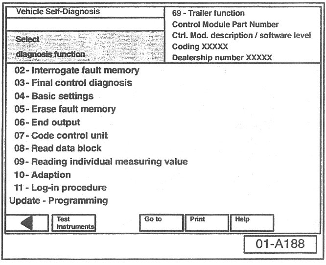
- Select Diagnosis function "07 - Code control unit".
- Change coding from "1" to "2".
- Finish coding by selecting the backward arrow <-- on navigation bar.
- Select Diagnosis function "06 - End output".
- Select Diagnosis function "00 - Collection services".
- Select "Check DTC memory - complete system". which will interrogate all fault memories.
- Erase ALL fault memories.
Once ALL fault memories have been erased:
- Install "Update - Programming" (flashing) CD W42TOUAREGTHCD in diagnostic tool.
- Select vehicle system "69-Trailer function".
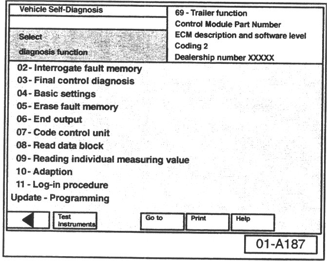
- Select "Update - Programming" option at bottom of screen.
CAUTION!
Once "Update - Programming" function has been started, switching ignition OFF or disconnecting the diagnostic connector may completely destroy the Control Module.
"Update - Programming" (flashing), performing
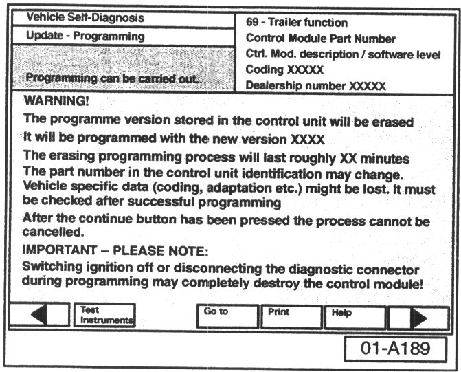
After selecting "Update - Programming" function:
- By selecting the forward arrow --> on navigation bar, the programming procedure begins.
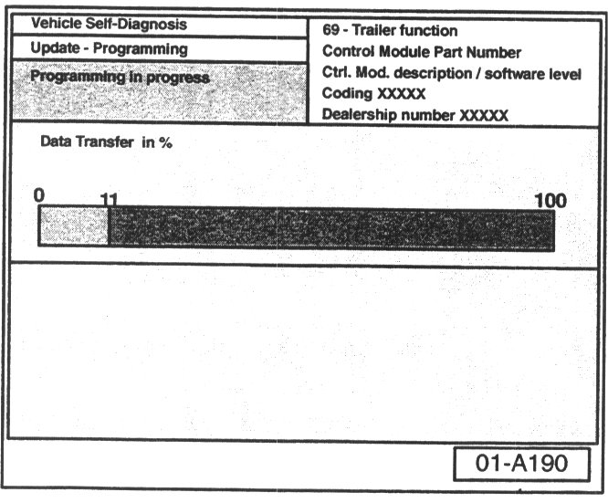
^ Similar screen appears:
^ Previous data in the Control Module is erased and new data is being transferred to the module from the flash CD.
Note:
Approx. flashing time is 5 minutes.
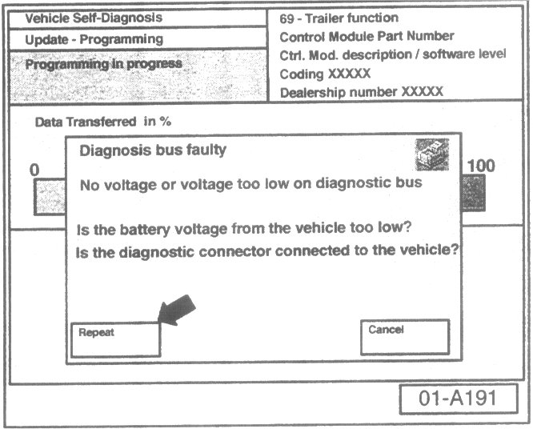
NOTE:
If during the "Update - Programming", a fault message is displayed:
- Confirm that VAS 5051 or VAS 5052 diagnostic tool power supply is adequate and that ALL appliances with high electromagnetic radiation (i.e. mobile phones) are switched OFF.
- The "Update - Programming" (flashing) process must then be started from the beginning using the "Repeat" button (arrow). DO NOT use the "Cancel" button.
IMPORTANT!
On NO occasion should the "Cancel" button be selected.
Once "Update - Programming" (flashing) is complete:
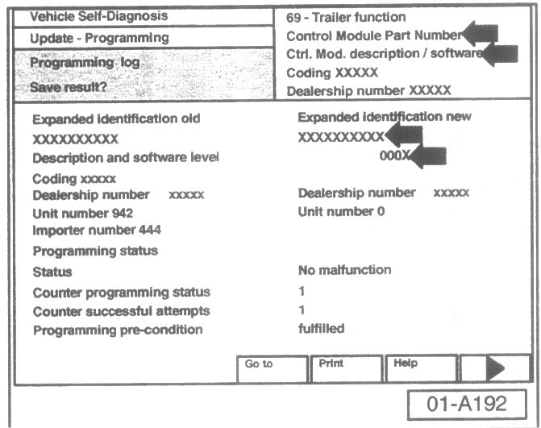
^ Similar screen appears.
^ New Control Module Part Number and updated software level is displayed at (arrows).
Once "Update - Programming" (flashing) is complete, the control module must be re-initialized.
- Select the forward arrow --> on navigation bar.
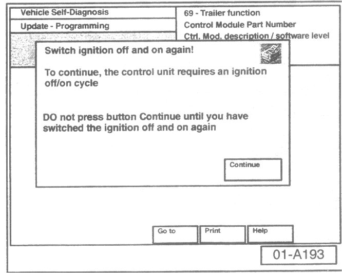
^ The tester requests you to switch the ignition OFF.
- Switch ignition OFF.
IMPORTANT!
^ Wait at least 20 seconds before switching the ignition back ON (failure to wait at least 20 seconds may damage the Control Module). a
After waiting 20 seconds:
- Switch ignition ON.
After switching ignition ON, the Control Module has been re-initialized, however, fault memories must now be erased.
- Select the "Continue button"
Fault memories, erasing after "Update - Programming" (flashing)
Due to the CAN bus system, fault messages will be stored in various Control Modules during programming.
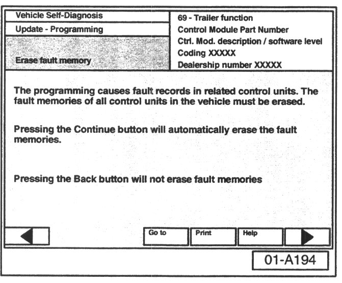
To erase ALL fault memories:
- Confirm by selecting the forward arrow --> on navigation bar.
^ Erase fault memories takes approx. 15 minutes.
Once fault memories have been erased:
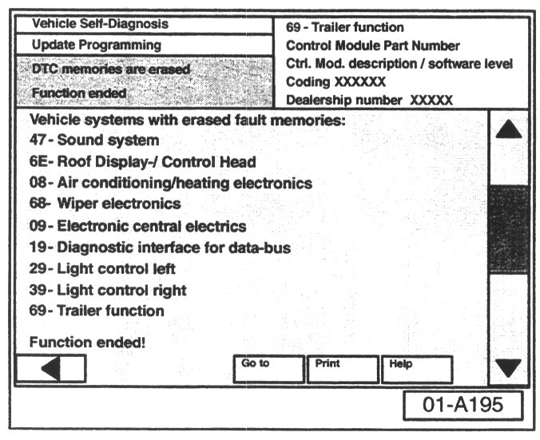
Similar screen appears.
^ Function ended appears at bottom of screen.
- Finish update of the Control Module by selecting the backward arrow <-- on navigation bar.
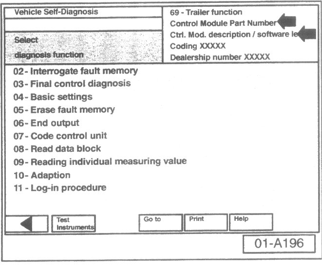
^ Similar screen appears.
^ New Control Module Part No: 7L0 907 383G and updated software level "8854" will appear at arrows.
^ Flash CD can now be removed from VAS
5051 or VAS 5052 Diagnostic tool.
- Print the "69-Trailer function" screen to verify Control Module update software level.
^ VAS 5051 will print to printer immediately.
^ VAS 5052 will hold the print until process is complete and then you may take the tester to the printer for printing the screen.
- Attach print to vehicle Repair Order.
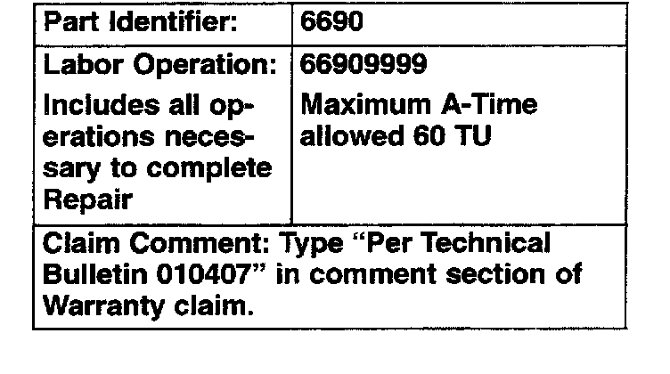
When procedure applies to vehicles within the New Vehicle Limited Warranty shown.